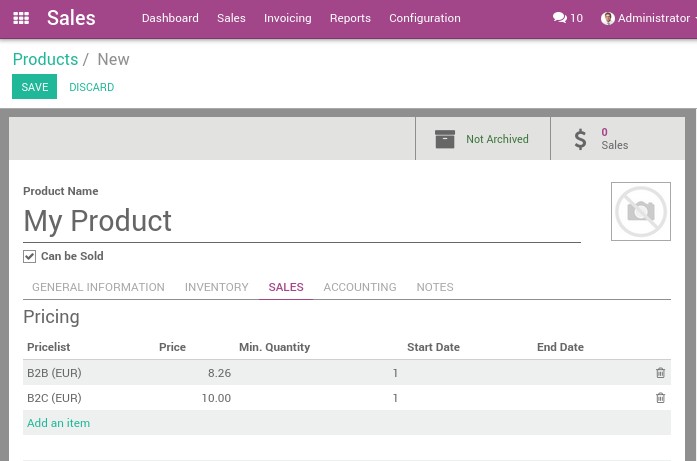

B2B (tax excluded) and B2C (tax included) pricing¶
When working with consumers, prices are usually expressed with taxes included in the price (e.g., in most eCommerce). But, when you work in a B2B environment, companies usually negotiate prices with taxes excluded.
Odoo manages both use cases easily, as long as you register your prices on the product with taxes excluded or included, but not both together. If you manage all your prices with tax included (or excluded) only, you can still easily do sales order with a price having taxes excluded (or included): that’s easy.
This documentation is only for the specific use case where you need to have two references for the price (tax included or excluded), for the same product. The reason of the complexity is that there is not a symmetrical relationship with prices included and prices excluded, as shown in this use case, in belgium with a tax of 21%:
Your eCommerce has a product at 10€ (taxes included)
This would do 8.26€ (taxes excluded) and a tax of 1.74€
But for the same use case, if you register the price without taxes on the product form (8.26€), you get a price with tax included at 9.99€, because:
8.26€ * 1.21 = 9.99€
So, depending on how you register your prices on the product form, you will have different results for the price including taxes and the price excluding taxes:
Taxes Excluded: 8.26€ & 10.00€
Taxes Included: 8.26€ & 9.99€
Note
If you buy 100 pieces at 10€ taxes included, it gets even more tricky. You will get: 1000€ (taxes included) = 826.45€ (price) + 173.55€ (taxes) Which is very different from a price per piece at 8.26€ tax excluded.
This documentation explains how to handle the very specific use case where you need to handle the two prices (tax excluded and included) on the product form within the same company.
Note
In terms of finance, you have no more revenues selling your product at 10€ instead of 9.99€ (for a 21% tax), because your revenue will be exactly the same at 9.99€, only the tax is 0.01€ higher. So, if you run an eCommerce in Belgium, make your customer a favor and set your price at 9.99€ instead of 10€. Please note that this does not apply to 20€ or 30€, or other tax rates, or a quantity >1. You will also make you a favor since you can manage everything tax excluded, which is less error prone and easier for your salespeople.
Configuration¶
Introduction¶
The best way to avoid this complexity is to choose only one way of managing your prices and stick to it: price without taxes or price with taxes included. Define which one is the default stored on the product form (on the default tax related to the product), and let Odoo compute the other one automatically, based on the pricelist and fiscal position. Negotiate your contracts with customers accordingly. This perfectly works out-of-the-box and you have no specific configuration to do.
If you can not do that and if you really negotiate some prices with tax excluded and, for other customers, others prices with tax included, you must:
always store the default price tax excluded on the product form, and apply a tax (price excluded on the product form)
create a pricelist with prices in tax included, for specific customers
create a fiscal position that switches the tax excluded to a tax included
assign both the pricelist and the fiscal position to customers who want to benefit to this pricelist and fiscal position
For the purpose of this documentation, we will use the above use case:
your product default sale price is 8.26€ tax excluded
but we want to sell it at 10€, tax included, in our shops or eCommerce website
eCommerce¶
If you only use B2C or B2B prices on your website, simply select the appropriate setting in the Website app settings.
If you have both B2B and B2C prices on a single website, please follow these instructions:
Activate the developer mode and go to .
Open either
Technical / Tax display B2BorTechnical / Tax display B2C.Under the Users tab, add the users requiring access to the price type. Add B2C users in the B2C group and B2B users in the B2B group.
Setting your products¶
Your company must be configured with tax excluded by default. This is usually the default configuration, but you can check your Default Sale Tax from the menu of the Accounting application.
Once done, you can create a B2C pricelist. You can activate the pricelist feature per customer from the menu: of the Sale application. Choose the option different prices per customer segment.
Once done, create a B2C pricelist from the menu . It’s also good to rename the default pricelist into B2B to avoid confusion.
Then, create a product at 8.26€, with a tax of 21% (defined as tax not included in price) and set a price on this product for B2C customers at 10€, from the menu of the Sales application:
Setting the B2C fiscal position¶
From the accounting application, create a B2C fiscal position from this menu: . This fiscal position should map the VAT 21% (tax excluded of price) with a VAT 21% (tax included in price)
Test by creating a quotation¶
Create a quotation from the Sale application, using the menu. You should have the following result: 8.26€ + 1.73€ = 9.99€.

Then, create a quotation but change the pricelist to B2C and the fiscal position to B2C on the quotation, before adding your product. You should have the expected result, which is a total price of 10€ for the customer: 8.26€ + 1.74€ = 10.00€.

This is the expected behavior for a customer of your shop.
Avoid changing every sale order¶
If you negotiate a contract with a customer, whether you negotiate tax included or tax excluded, you can set the pricelist and the fiscal position on the customer form so that it will be applied automatically at every sale of this customer.
The pricelist is in the Sales & Purchases tab of the customer form, and the fiscal position is in the accounting tab.
Note that this is error prone: if you set a fiscal position with tax included in prices but use a pricelist that is not included, you might have wrong prices calculated for you. That’s why we usually recommend companies to only work with one price reference.